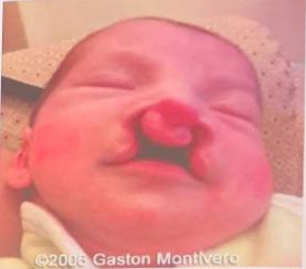
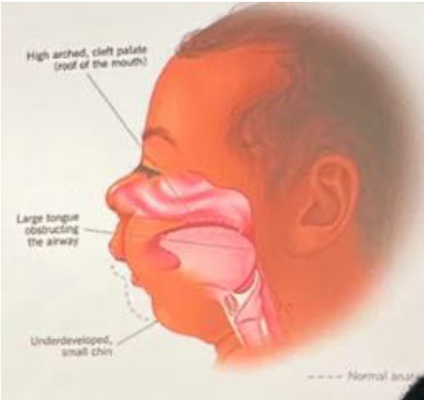
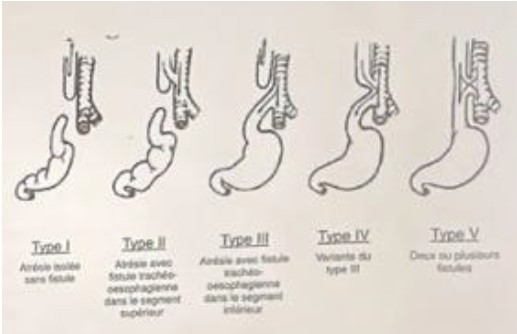
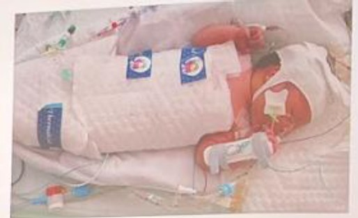
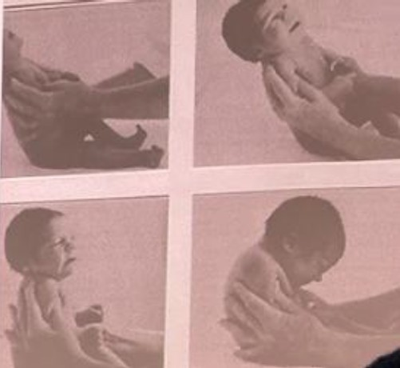
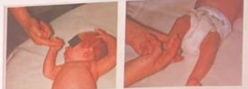
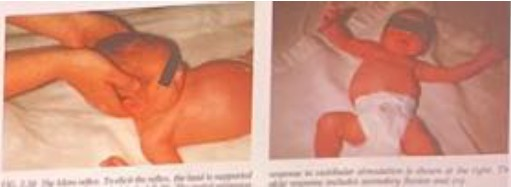
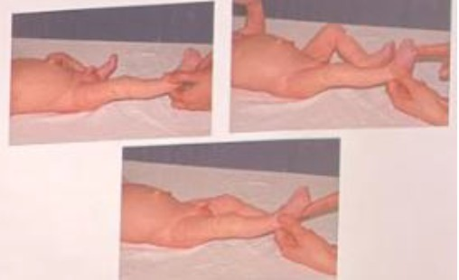
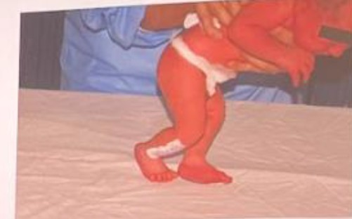
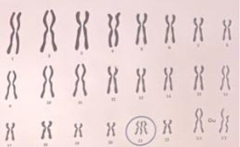

QCM Révision Pédiatrie
1. Quelle est cette pathologie ? (Image de nouveau-né avec fente)
2. Quelle est cette pathologie ? (Image de profil avec micrognathie)
Caractéristiques : Micrognathie, Rétrognathie, Glossoptose.
3. Qu'est ce que cet objet ?
Tétine longue adaptée en cas de fente.
4. Quelle est cette pathologie ? (Schéma digestif/trachée)
5. Que représente cette image ? (Bébé avec dispositif de refroidissement)
6. Pour quelle pathologie ce traitement (hypothermie) est-il utilisé ?
7. A propos de l'Encéphalopathie Anoxo-ischémique: quelle(s) proposition(s) ci-dessous est (sont) fausse(s) ?
1. Fréquente
2. Prévisible
3. Pas de risque de Séquelle
4. Pas de suivi particulier pour le nouveau-né
8. Définition de la prématurité
9. De quoi s'agit-il (test clinique) et pourquoi y procède-t-on ?
C'est un test du tonus axial. A la naissance, on observe normalement une hypotonie axiale et une hypertonie périphérique.
10A. Identifier le réflexe archaïques

10B. Identifier le réflexe archaïques

10C. Identifier le réflexe archaïques
10D. Identifier le réflexe archaïques
10E. Identifier le réflexe archaïques
10F. Identifier le réflexe archaïques
11. Réflexes archaïques : à partir de quand ? et jusqu'à quand ?
Note : La succion commence dès la grossesse.
12. De quelle pathologie s'agit il ? (Caryotype avec 3 chromosomes 21)
13. A propos de la trisomie 21: quelle incidence (nombre de naissances) ?
14. A propos de la trisomie 21: quel facteur de risque connu ?
15. Trisomie 21 : Citer 3 malformations physiques + 3 malformations / difficultés orthophoniques
Physique : Visage rond et plat, nuque plate et épaisse, fentes palpébrales obliques en haut et en dehors, épicanthus, petit nez, petite bouche, protrusion de la langue.
Orthophonie : Palais ogival, hypotonie bucco-linguo-faciale, hyperlaxité (mauvais contrôle mandibule), respiration buccale, troubles de l'articulation, retard de langage, succion/déglutition peu tonique.
16. Nombre d'AVC pédiatrique par an en France
17. Quels sont les 2 types d'AVC ?
18. Citez les symptômes cliniques possiblement évocateurs d'AVC
- Convulsions
- Déficit neurologique brutal (aigu)
- Faiblesse / déficit moteur unilatéral (hémicorporel)
- Déformation de la bouche
- Trouble du langage
19. Qu'est ce qu'un TSA ?
20. A propos du TSA: définition et prévalence dans la population générale ?
Définition : Trouble d'origine neurodéveloppementale caractérisé par des perturbations dans l'interaction et la communication sociale, et des comportements répétitifs et stéréotypés.
Prévalence : Environ 1% de la population.
(Note : 50% des enfants avec un TSA ont une déficience intellectuelle).
21. Qu'est ce qu'un TLO ?
22. Quels signes d'alerte et de sévérité après 3 ans pour un TLO ? (3 réponses attendues)
- Inintelligibilité à 3 ans
- Agrammatisme (ne pas faire de phrase) à 3-4 ans
- Trouble de la compréhension
23. Trouble du langage: citer des exemples de diagnostics différentiels
- Surdité (audiogramme)
- Trouble du spectre de l'autisme
- Pathologie neurologique ou génétique (retard marche, malformations...)
- Déficience intellectuelle
- Syndrome de Landau-Kleffner (régression langage)